-
1 入口
1、使用发起人账号登陆销售助手，在首页中的工作台中选择价格审批，点击进入后会显示当前登陆人发起的所有价格申请单。
路径：销售助手APP-工作台-价格审批
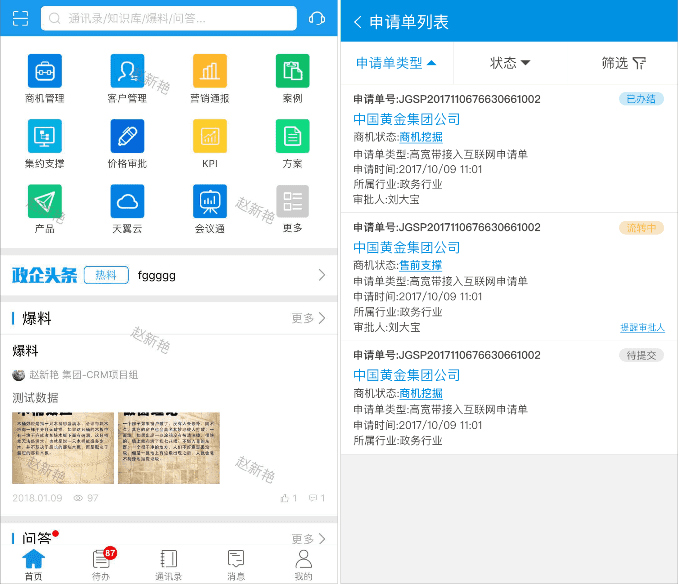◆备注信息：
◆申请单列表中展示申请单状态为：待提交、流转中和已办结的申请单信息
◆申请单列表可根据申请单类型、申请单状态和筛选来选择展示申请单列表的数据信息
其中申请单类型展示为九种申请单类型（如下图所示）
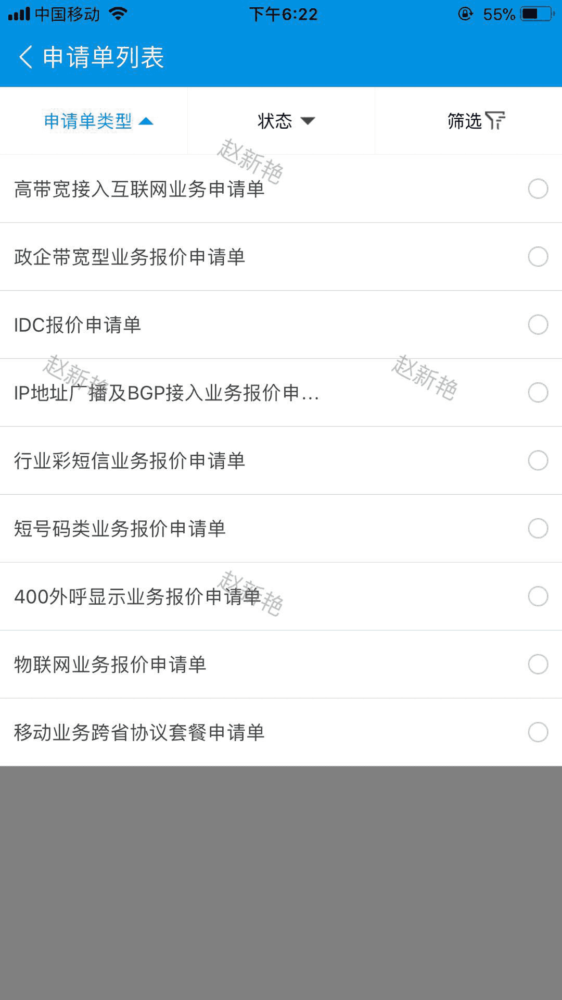状态展示位三种状态：待提交、流转中和已办结（如下图所示）
筛选中可通过申请单号、商机名称、申请时间、状态、授权级别和商机状态来展示申请单列表信息
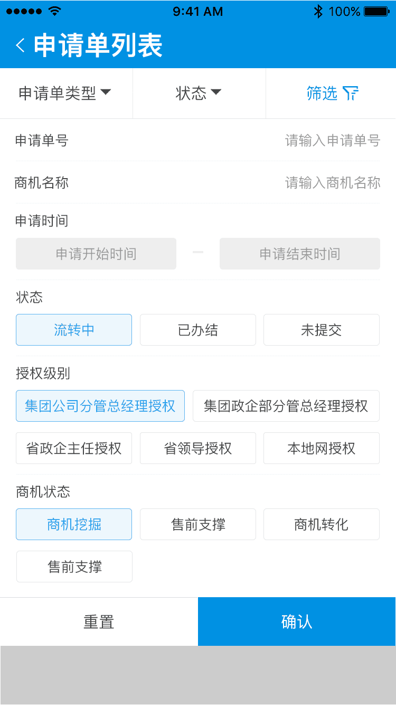◆申请单列表中可查看到申请单状态（每条申请单信息右上角处黄色底色状态信息）
1、可点击商机状态进入商机当前申请单所关联的商机信息
2、可点击每条申请单信息右下角的蓝色提醒审批来提醒下一审核节点的审批人尽快审批
3、可点击其他空白处进入申请单详情
附图（仅供参考）
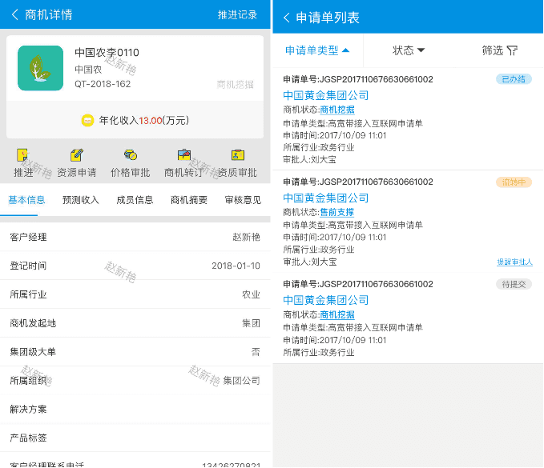 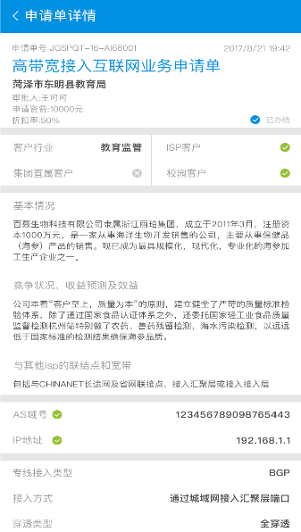◆其中申请单详情中可以进行查看流转记录和撤回操作（附图-仅供参考）
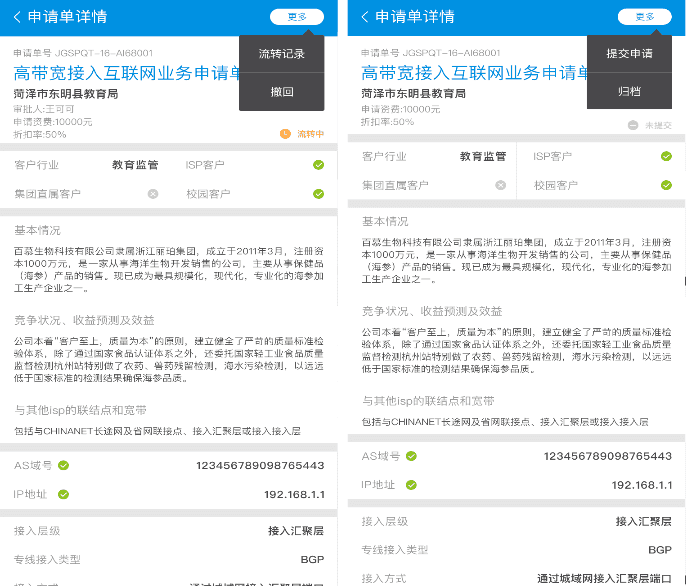 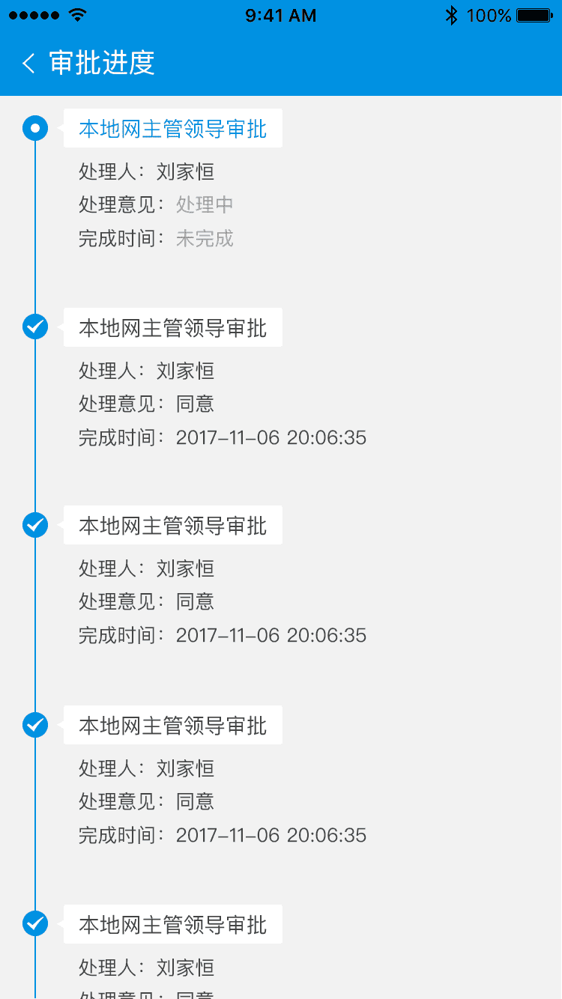说明：
通过工作台中的价格审批进入的申请单详情且进行撤回操作只是给发起人使用的，参与审核与会签节点的撤回通过待办进行操作。
使用前提：当发起人发起价格申请单后在下一审核节点（第一个审核节点）为审核的情况才才允许撤回，已经处理的会提示“不可撤回”。
2、使用发起人账号登陆销售助手，在首页中的工作台中进入商机管理，点击我挖掘的商机，点击列表中的商机信息进入商机详细信息页，通过商机详细信息页中的价格审批进入当前商机所发起的价格申请单
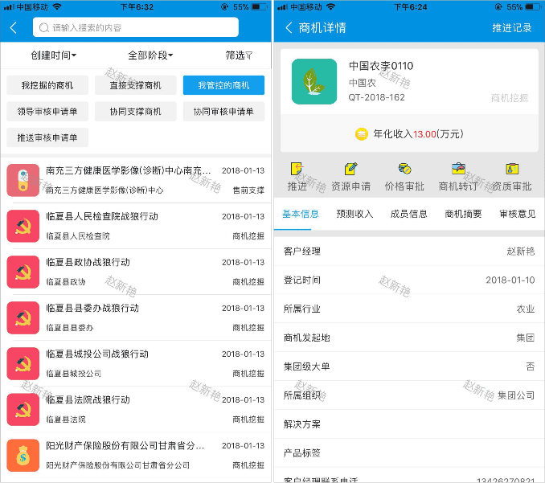◆备注信息：
该查看价格申请单方式只能查看该商机所发起的价格申请单
-
2 审核与会签价格申请单
◆价格申请单发起后，相应的审核人可进行审核和会签操作。
审核与会签的区别:审核后需要选择下一步审核人及会签部门（如需要会签环节），会签只需填写会签意见即可。
2.1 审核价格申请单
1、使用具有审核价格申请单的账号登陆销售助手
2、点击待办，进入商机价格审批待办
3、默认进入待审批界面
4、选择待审批列表中待审核的价格申请单点击审批（空白区域也可以）进入审核处理界面
5、点击下一步选择审核人（和会签部门）
6、点击提交交按钮且提示“成功！”则代表当前申请单审核完毕
◆以下是操作流程图：

说明：
在审核界面中可以查看价格申请单详情和流转记录详细信息
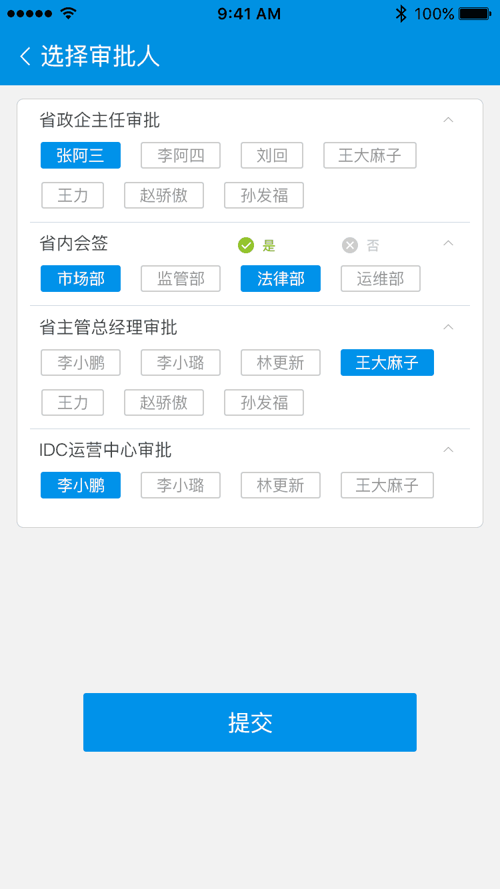说明：
选择审批人规则同PC（电脑）端一致
2.2 会签价格申请单
1、使用具有审核价格申请单的账号登陆销售助手
2、点击待办，选择商机价格审批，进入代办列表，选择待办任务
3、默认进入待审批界面
4、选择待审批列表中待审核的价格申请单点击审批（空白区域也可以）进入审核处理界面
5、点击提交交按钮且提示“成功！”则代表当前申请单会签完毕
◆以下是操作流程图
 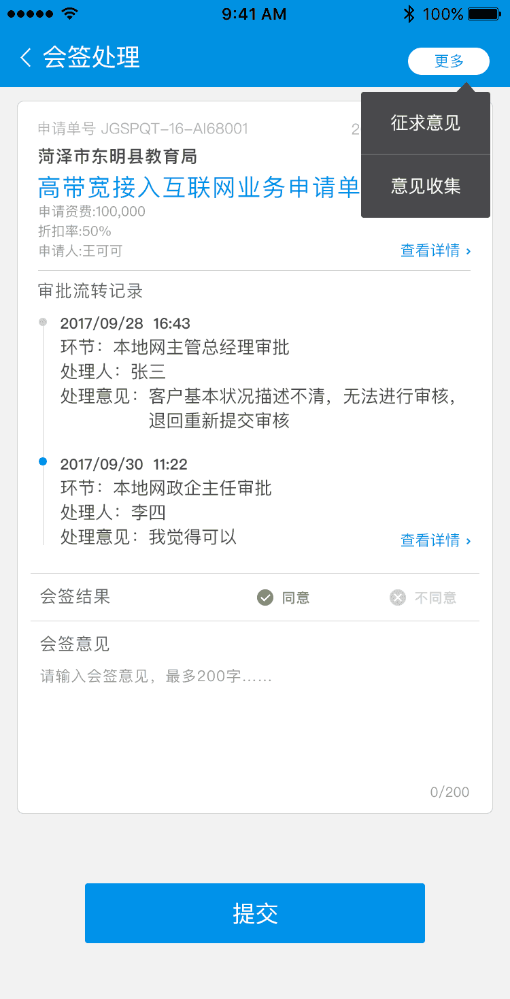
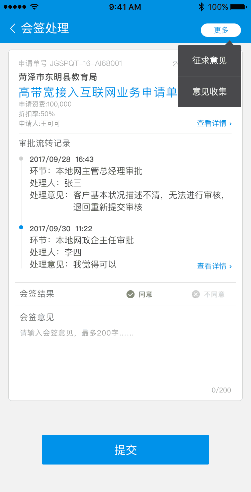
2.3 查看已审批任务
审核完毕的价格申请单会进入已办任务列表，可通过进入已办任务列表查看已经审核过的价格申请单。在已办任务列表中可进行已审核的价格申请单撤回操作和查看流转记录操作（以下附图仅供参考） 撤回操作必须为下一节点未处理才允许撤回操作，当撤回成功该价格申请单在已办任务列表中操作列不在显示撤回字样
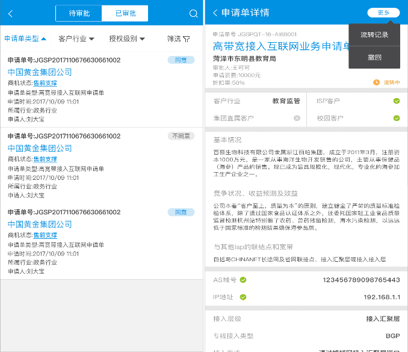 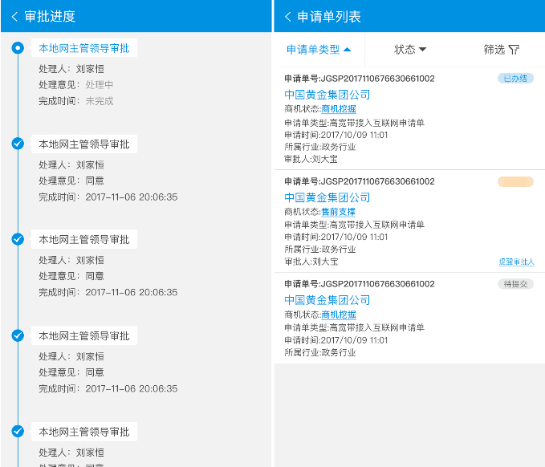2.4 发起意见征求
1、使用具有审批价格审批单帐号的人员登录销售助手
2、进入待办下的商机价格审批
3、点击价格审批中的待办任务进入待办列表
4、选择一条价格申请单后进入审核处理界面，点解右上角三个小点按钮在下拉的菜单中选择意见征集
5、填写审核意见选择征求人选择提醒方式后点击提交来完成意见征集操作
◆以下是操作流程图：
 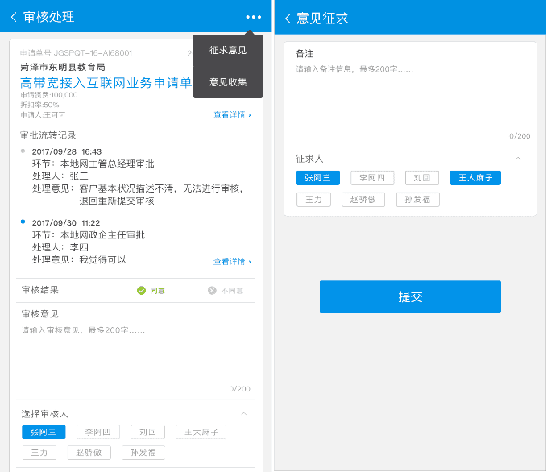
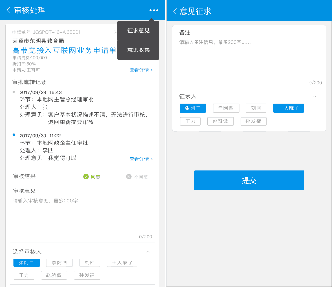
2.5 待我反馈
1、使用具有审批价格审批单帐号的人员登录销售助手
2、点击待办，选择部门内征求意见
3、默认进入待回复列表
4、选中一条数据点击进入反馈界面
5、点击提交即可
◆PC流程图如下：
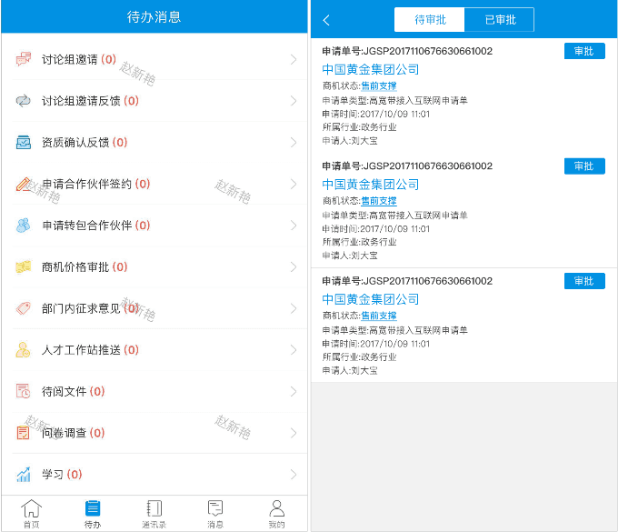 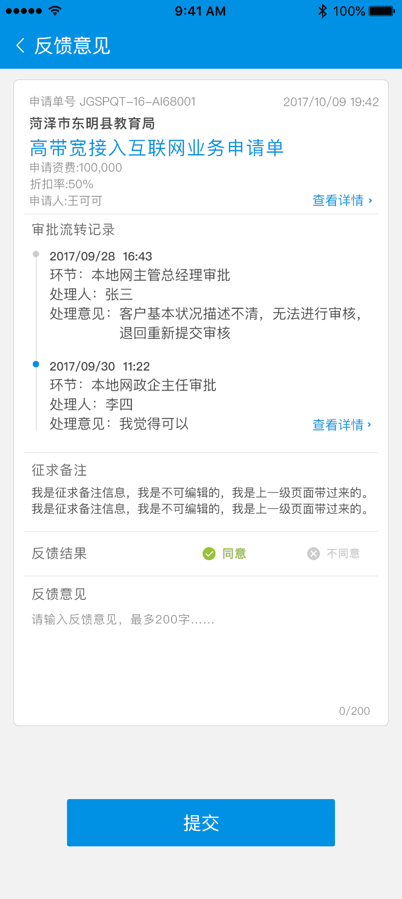说明：
反馈意见中可以查看价格申请单详情和流转记录操作
◆规则说明：
与PC端一致
2.6 我已看阅
1、使用具有审批价格审批单帐号的人员登录销售助手
2、点击待办，选择部门内征求意见
3、默认进入待回复列表,点击已回复进入已回复列表
4、即可查看相应的价格申请单的已回复详细信息
◆销售助手流程图如下：
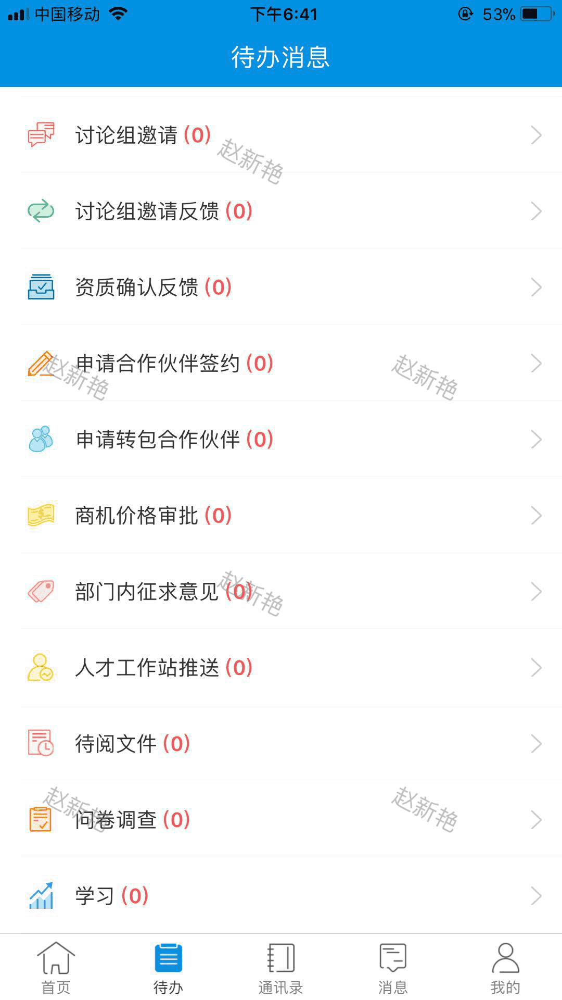2.7 查看反馈结果
1、使用具有审批价格审批单帐号的人员登录销售助手
2、进入待办下的商机价格审批
3、点击价格审批中的待办任务进入待办列表
4、选择一条价格申请单后进入审核处理界面，点解右上角三个小点按钮在下拉的菜单中选择反馈查看
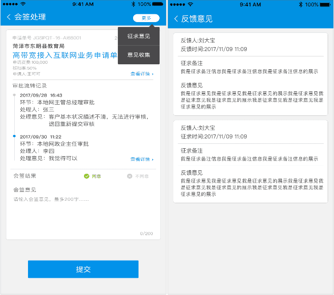 -
3 审批流程查看
3.1 发起人查看
发起人提交申请单后即可查看审批流转记录
1、使用发起人账号登陆销售助手，在首页中的工作台中选择价格审批，点击进入后会显示当前登陆人发起的所有价格申请单
路径：销售助手APP-工作台-价格审批
2、使用发起人账号登陆销售助手，在首页中的工作台中进入商机管理，点击我挖掘的商机，点击列表中的商机信息进入商机详细信息页，通过商机详细信息页中的价格审批进入当前商机所发起的价格申请单

3.2 审批人/会签人
方式一：
1、使用具有审核价格申请单的账号登陆销售助手
2、点击待办，选择商机价格审批，进入代办列表，选择待审批
3、默认进入待审批界面，默认显示最新的两条流转记录，点击流转记录，查看详情
方式二：
1、使用具有审核价格申请单的账号登陆销售助手
2、点击待办，选择商机价格审批，进入代办列表，选择已审批
3、点击列表数据进去申请单详情，点击又上角流转记录查看流转记录详情
-
4 价格申请单撤回说明
◆说明：
我的申请单列表中状态为流转中的价格申请单允许发起撤回操作
已办任务列表中允许对价格申请单发起撤回操作
◆前提：
流转中申请单，下一个审核节点未进行审核或会签处理